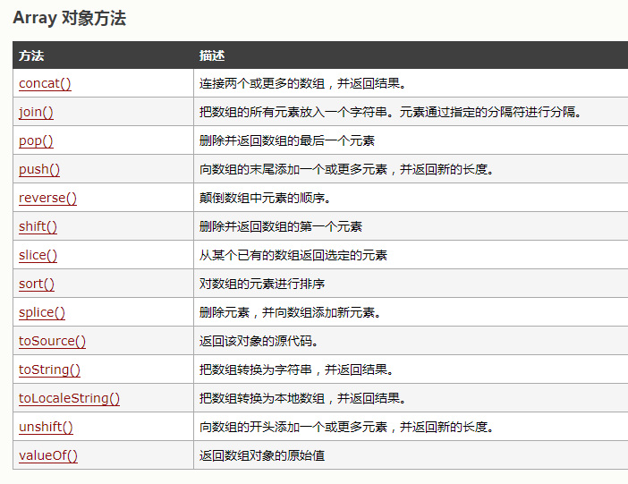

数组属性
)
pop()：删除并返回数组的最后一个元素
如：var arr=new Array(4,5,6,7,8);
console.log( arr.pop() ) console出来的结果是8
push()：向数组的末尾添加一个或多个元素
如：var arr=new Array(4,5,6,7,8);
arr.push(9)
console.log(arr) console出来的结果是4,5,6,7,8,9
shift() : 删除并返回数组的第一个元素.
如：var arr=new Array(4,5,6,7,8);
console.log(arr.shift() ) console出来的结果是4
splice(): 删除一个元素并且向删除的元素位置添加一个新元素
splice(a,b,c)
a:必需。整数，规定添加/删除项目的位置，使用负数可从数组结尾处规定位置。
b:必需。要删除的项目数量。如果设置为 0，则不会删除项目。
c:可选。向数组添加的新项目
如：var arr=new Array(4,5,6,7,8);
console.log(arr.splice(3,1,9) ) console出来的结果是4,5,9,7,8
unshift():向数组的开头添加一个元素或多个元素并且返回新
如：var arr=new Array(4,5,6,7,8);
console.log(arr.unshift(1,2,3)) console出来的结果是1,2,3,4,5,9,7,8
reverse():颠倒数组中元素的顺序
如：var arr=new Array(4,5,6,7,8);
console.log(arr.reverse()) console出来的结果是8,7,6,5,4
sort():对数组的元素进行排序，一般是升序排列，但是它只能区分0-9这几个数字，并不能区分10与100等这样的数字
如：var arr=new Array(8,7,6,5,4);
console.log(arr.sort()) console出来的结果是4,5,6,7,8
slice(a,b)
a:必需。规定从何处开始选取。如果是负数，那么它规定从数组尾部开始算起的位置。也就是说，-1 指最后一个元素，-2 指倒数第二个元素，以此类推。
b:可选。规定从何处结束选取。该参数是数组片断结束处的数组下标。如果没有指定该参数，那么切分的数组包含从 a 到数组结束的所有元素。如果这个参数是负数，那么它规定的是从数组尾部开始算起的元素。
slice():从某个已有的数组返回选定的元素
如：var arr=new Array(4,5,6,7,8);
console.log(arr.slice(1,4)) console出来的结果是5,6,7,8
toString() :可把一个逻辑值转换为字符串，并返回结果。
join:用于把数组中的所有元素放入一个字符串。